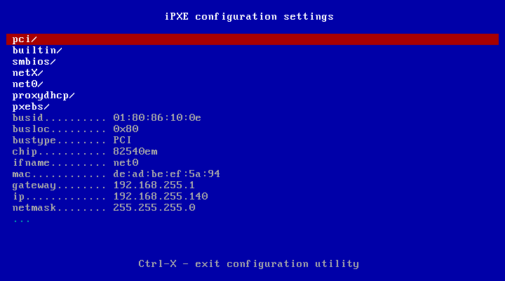

7.6.2. NBP¶
El NBP es el programa que ejecuta el cliente PXE y que permite, a su vez, la carga del sistema operativo remoto que acabará ejecutando la maquinas. De hecho, la única función del cliente es poder llegar a ejecutar el NBP para cederle el control. Ya hemos visto que esto exige obtener primero una configuración de red y, una vez ya con capacidad para comunicarse, obtener el propio NBP para su ejecución.
Como el objetivo del arranque por red es llegar a cargar un sistema operativo y el NBP forma parte de esta tarea, es precisa también estudiar cómo se comporta y cómo se configura, ya que en su configuración se expresan las instrucciones para la carga de los sistemas operativos remotos disponibles.
Bajo el epígrafe presentaremos dos posibilidades:
syslinux, que es más habitual y cuya configuración da mucho juego.
iPXE, que es más bien un cliente PXE con posibilidades de arrancar directamente un sistema remoto.
La guía está enfocada al uso de syslinux, pero se darán algunas pautas y consejos sobre iPXE.
Nota
Con la aparición de UEFI syslinux ha sido progresivamente desplazado por GRUB.
7.6.2.1. Carga¶
Antes de nada, es preciso aclarar cómo conoce el cliente PXE cuál es el NBP que debe arrancar. El método depende de si la información la ofrece el servidor DHCP o si lo hace un servidor PXE independiente.
7.6.2.1.1. DHCP¶
Los paquetes DHCPoffer que envía el cliente al servidor contienen unos campos iniciales12 entre las cuales está el campo «siaddr» que indica la IP del servidor desde el que descargar el NBP y el campo «file» que permite indicar cuál es el fichero.
Nota
En el cliente del ISC se da valor a estos campos mediante las
directivas next-server y filename.
No obstante lo anterior, existen las opciones 66 (TFTP server name) y 67 (Bootfile name) que cumplen esta misma función. El RFC 2132 explica cuándo deben usarse estas opciones, pero ignoro cuándo se dan tales circunstancias. Lo cierto es que, dando valor adecuado sólo a los campos siaddr y file, los clientes PXE parecen funcionar bien. Como, por lo general, los clientes PXE sólo soportan la descarga mediante TFTP, no es necesario que en ningún lugar se especifique el protocolo3 para la descarga.
7.6.2.1.2. PXE¶
En este caso, la cosa es un poco distinta: es el servicio PXE el que informa de cuál es servidor y cuál el NBP y, como ya se ha explicado, puede incluso informar de más de una posibilidad para que el cliente PXE construya un menú de selección.
7.6.2.2. iPXE¶
iPXE es, en realidad, un cliente PXE con esteroides, hasta el punto de que puede cargarse en la memoria flash de una tarjera de red para que sustituya al cliente que incorpora la propia tarjeta. Sólo hay que compilar la imagen adecuada o escogerla via web.
Pero a diferencia de un cliente PXE normal que se limita a cargar el NBP y cederle el control, iPXE incorpora un sencillo lenguaje de script que da más posibilidades.
Ventajas
Soporta directamente la descarga por TFTP, HTTP e incluso FTP. Los clientes PXE sólo soportan TFTP.
Su lenguaje de script incorpora variables que permiten acceder a la información que envían los servidores DHCP y DNS al cliente. Esto, unido a la descarga por HTTP, posibilita crear arranques con una configuración dinámica basada en el tipo de máquina o la red en la que se encuentra.
Nota
Lea los consejos para más información.
Permite directamente cargar un sistema operativo (de ahí que lo hayamos incluido dentro de esta categoría de NBP)
Desventajas
No es el cliente PXE que incorporan las tarjetas de red, por lo que hay que buscarse las vueltas para poder usarlo.
Su lenguaje de script no permite la creación de menús de selección, así que en principio sólo posibilitaría el arranque de un sistema operativo, a menos que dispusiéramos de un servidor PXE independiente que es capaz de enviar un menú de selección. En cualquier caso, las posibilidades de selección son infinitamente menores a las que ofrece syslinux.
7.6.2.2.1. Cómo usarlo¶
Las máquinas virtuales de qemu usan para su arranque por red iPXE. Sin embargo, las tarjetas de red reales no lo incorporan, así que, si tenemos interés en usarlo, tenemos varias alternativas:
La más traumática, flashear la tarjeta de red.
Hacer que el cliente PXE original, use como NBP una versión de iPXE preparada para este fin.
Hacer que el gestor de arranque (grub habitualmente) del sistema local incluya una entrada que lance iPXE.
7.6.2.2.2. Cómo funciona¶
Busca una configuración de red y una de arranque. Para esta segunda, sigue pautas señaladas baja el epígrafe sobre la carga del NBP.
Si el fichero de arranque que se le facilita es otro NBP (syslinux, por ejemplo), entonces cede el control a éste y su uso no tiene ninguna diferencia respecto a un cliente PXE normal. Ahora bien, como iPXE soporta scripting, el fichero puede no ser un NBP, sino un script para que iPXE lo cargue. Por ejemplo:
#!ipxe exit
cuyo efecto es evidente: salir de iPXE lo que provoca que se siga la secuencia de arranque de la BIOS. Por supuesto, podemos hacer cosas más complicadas, pero no es nuestro propósito.
Obsérvese que si usamos un servidor PXE podemos enviar varios scripts distintos4 que hagan distintas cosas (arranque local, reinicio de la máquina, arranque de un sistema de red, abrir una consola de iPXE, etc.) y el cliente PXE será capaz de presentarnos un menú para que escojamos qué hacer.
Una vez que se selecciona un ítem, o se ejecuta directamente si sólo había uno, se descargará el sistema y se ejecutará con lo que finalizará el proceso de arranque.
7.6.2.2.3. Consejos¶
Como iPXE soporta HTTP para las descargas, el nombre del fichero enviado al cliente puede ser, por ejemplo:
http://192.168.255.2/boot/start.ipxelo que provocará que el fichero sea descargado por HTTP según tal URL.
Cuando se dispone un servidor PXE independiente, éste es el que proporciona la IP del servidor de descargas y el nombre de fichero. En principio, iPXE facilita las variables ${next-server} y ${filename}, pero los datos proporcionados por el servicio PXE estarán accesibles en estas variables, sólo si el servidor DHCP envía vacíos los campos siadd y file, lo cual no tiene por qué haberse producido. De hecho, algunos servidores envían como siaddr la propia IP del servidor DHCP en caso de que no se especifique una en su configuración, por lo que jamás envían vacío este campo.
Si se quiere acceder a los datos que envía el servidor PXE, pueden usarse las variables ${proxydhcp/next-server} y ${proxydhcp/filename}5. Por ese motivo, la expresión anterior del fichero, habría sido mucho más apropiada haberla hecho así:
http://${proxydhcp/next-server}/boot/start.ipxe
Abrir una shell de iPXE6 puede ayudarnos a conocer mejor cómo ha sido el arranque:
La orden config permite ver los valores de todas las variables definidas:
La orden echo nos da simplemente el valor de una variable, pero show puede ayudar a saber de dónde toma tal valor:
iPXE> echo filename http://${proxydhcp/next-server}/boot/start.ipxe iPXE> show filename proxydhcp/filename:string = http://${proxydhcp/next-server}/boot/start.ipxe iPXE> show next-server net0.dhcp/next-server:ipv4 = 192.168.255.1 iPXE> echo ${proxydhcp/next-server} 192.168.255.2
Nota
Nótese que con esta indagación conocemos que el valor de ${filename} procede del servidor PXE, pero el valor de ${next-server}, no; puesto que el servidor DHCP envía el suyo propio.
Aunque con la orden config no aparecen, las opciones de DHCP también constituyen variables. Así, por ejemplo, podríamos definir que el script cargado fuera este7:
http://${proxydhcp/next-server}/boot/start.php?mac=${mac}&domain=${15}
ya que la opción 15 es la que contiene el nombre de dominio. Obsérvese que en este caso, estamos valiéndonos de que la descarga es por HTTP, para descargar no un fichero estático, sino para ejecutar un script en PHP al que alimientamos con la MAC del cliente y el dominio al que pertenece.
7.6.2.3. syslinux¶
Advertencia
Si revisamos la página del proyecto, comprobaremos que syslinux, propiamente, es un gestor ligero de arranque que cubre arranque local (syslinux en sí), arranque con cdrom (isolinux) y arranque a través de la red (pxelinux). Por tanto, deberíamos hablar más bien de pxelinux.
Ha sido, sin duda, el NBP más utilizado durante muchos tiempo, gracias a que pese a configurarse con bastante sencillez, permite una amplia gama de configuraciones. La aparición de UEFI y un bajón en su ritmo de desarrollo, lo han desbancado en favor de GRUB.
7.6.2.3.1. Estructura¶
El arranque con syslinux está constituido por:
El NBP, que dispone de algunas variantes:
pxelinux.0que sólo soporta descargas a través de TFTP.gpxelinux.0que incluye código del proyecto gPXE, lo que le permitía descargar del servidor usando los protocolos HTTP o TFTP.lpxelinux.0desde las últimas versiones de syslinux, que soporta de forma nativa HTTP y FTP y es recomendable sobre la versión anterior.syslinuxx.efipara sistemas con UEFI de 32 bits y de 64 bits en vez de BIOS. Son dos ejecutables distintos uno para un tipo de UEFI y otro para la otra, Ambos soportan también descargas HTTP y FTP.
Lo cierto es que HTTP es bastante más recomendable que TFTP e indispensable si se quieren crear configuraciones dinámicas para syslinux, de modo que en esta guía usaremos
lpxelinux.0.Nota
Por supuesto, nos referimos exclusivamente a las variantes de pxelinux.
Nota
La UEFI trae por ahora dos arranque por red: el nativo (para el cual necesitaremos syslinux.efi) y uno llamado «Legacy BIOS mode» que emula el arranque de la BIOS y permite usar lpxelinux.0. Más adelante trataremos esto al configurar un arranque multiarquitectura.
Una serie de módulos con extensión
.c32, que permiten a syslinux ampliar sus capacidades. Por ejemplo,reboot.c32sirve para reiniciar el ordenador. De entre todos, es indispensableldlinux.c32que el NBP intentará descargar inmediatamente después de entrar en funcionamiento.La configuración que permite establecer cuáles son los sistemas de arranque disponibles. Puede estar cosntituida por un sólo fichero o varios que, al igual que en el caso de los módulos, tendrán que descargarse del servidor de ficheros.
7.6.2.3.2. Cómo funciona¶
Una vez descargado el NBP (llamémoslo a partir de ahora pxelinux),
este se procurará una serie de ficheros necesarios para poder realizar su
función. Los estrictamente necesarios son dos: el módulo ldlinux.c32 y
el fichero de configuración.
Antes, no obstante, de discutir sobre cómo los obtiene es necesario aclarar que syslinux maneja el concepto de directorio de trabajo (CWD), que es aquel a partir del cual se construyen las direcciones relativas de los ficheros que requieran descarga. Si el servicio se limitó a indicar la dirección IP del servidor y cuál era el NBP, el directorio de trabajo se considerará aquel en donde se encontrara situado el NBP.
Por ejemplo, supongamos que el servidor DHCP envía los siguientes datos:
Campo |
Valor |
|---|---|
siaddr |
|
filename |
|
En este caso, pxelinux (en particular el ejecutable
lpxelinux.0) se descargará por TFTP del servidor 192.168.255.1 y su
ruta dentro del servidor es bios/lpxelinux.0. En consecuencia la URL
de descarga es:
tftp://192.168.255.1/bios/lpxelinux.0
y el CWD se definirá como:
tftp://192.168.255.1/bios/
Ahora bien, pxelinux también comprueba el valor de la opción DHCP
210 y, si existe, toma este valor como CWD. Consecuentemente, si se quiere
usar otro directorio de trabajo (p.e. http://192.168.255.1/boot/bios/
para cambiar de protocolo de descarga) puede configurarse el servidor DHCP
para que envíe esta opción al cliente con el valor desedo.
Establecido el CWD, se intentará descargar el módulo ldlinux.c32 de
distintas localizaciones en el siguiente orden:
$CWD/ldlinux.c32$CWD/boot/isolinux/ldlinux.c32$CWD/isolinux/ldlinux.c32$CWD/boot/syslinux/ldlinux.c32$CWD/sysisolinux/ldlinux.c32
Supuesto éxito, entonces se procederá a descargar el fichero de configuración. Cuál es puede fijase enviando la opción DHCP 209, cuyo valor yuxtapuesto al valor del CWD dará la URL de tal fichero. Por ejemplo, si esto es lo que recibe el cliente:
Campo |
Valor |
|---|---|
siaddr |
|
filename |
|
Opción 209 |
|
La URL del fichero de configuración será:
tftp://192.168.255.1/bios/config/start.cfg
y de ahí será de donde intente obtenerse la configuración. Si no se envía valor para la opción 209, el NBP sigue un algoritmo para localizar un fichero. Para ilustrar qué hace tomemos el ejemplo que usa la propia documentación de syslinux. Suponiendo que que el identificador del cliente sea b8945908-d6a6-41a9-611d-74a6ab80b83d, la MAC de la tarjeta 88:99:AA:BB:CC:DD y la dirección IP obtenida 192.168.2.91, pxelinux intentara obtener su configuración de distintas localizaciones siguiiente este orden:
$CWD/pxelinux.cfg/b8945908-d6a6-41a9-611d-74a6ab80b83d$CWD/pxelinux.cfg/01-88-99-aa-bb-cc-dd$CWD/pxelinux.cfg/C0A8025B$CWD/pxelinux.cfg/C0A8025$CWD/pxelinux.cfg/C0A802$CWD/pxelinux.cfg/C0A80$CWD/pxelinux.cfg/C0A8$CWD/pxelinux.cfg/C0A$CWD/pxelinux.cfg/C0$CWD/pxelinux.cfg/C$CWD/pxelinux.cfg/default
En principio, estos ficheros son los indispensables para poder funcionar. Ahora bien, la propia configuración puede provocar la descarga de otros módulos y ficheros de configuración:
Cuando se invoca un módulo, por ejemplo, con:
IU menu.c332pxelinux seguirá la misma estrategia que cuando intentó descargar
ldlinux.c32.CUando se cita otro fichero de configuración, se intentará descargar tomando como base el directorio de trabajo.
Si todo ha ido bien, la descarga de los ficheros resultará en la posibilidad de que el usuario elija el sistema de red a arrancar entre todos los disponibles que declara la configuración de pxelinux. Una vez que éste haga su selección, el NBP cargará el sistema según las instrucciones que recoge el propio fichero de configuración.
Nota
Atender al valor de las opciones DHCP 209 y 210 es algo propio de pxelinux y no del protocolo PXE en general. En consecuencia, los clientes PXE no piden esas opciones al servidor y para que éste las entregue al cliente debe forzarse su entrega. syslinux permite una alternativa: encapsular el valor de estas opciones dentro de la opción 43, que sí es requerida por los clientes PXE. Se verá al realizar la implementación.
7.6.2.3.3. Configuración¶
La configuración de syslinux es extensísima8, así que nos limitaremos a hacer una guía somera para saber cómo empezar a hincarle el diente.
Un fichero de configuración de syslinux consiste básicamente en la relación de sistemas disponibles que puede arrancar el usuario, así que la estructura general del fichero es la siguiente:
DIRECTIVAS GLOBALES
...
LABEL sistema1
DIRECTIVAS PARA EL SISTEMA 1
...
LABEL sistema2
DIRECTIVAS PARA EL SISTEMA 1
...